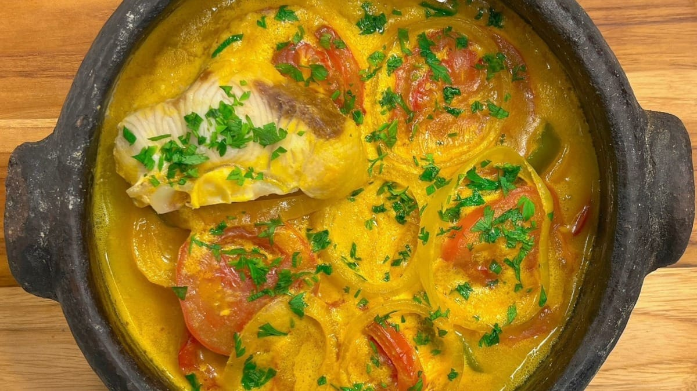

Moqueca de peixe

•
A moqueca de peixe é um prato tradicional da culinária brasileira, especialmente popular nas regiões litorâneas, como Bahia e Espírito Santo.
Esta receita destaca o sabor único e a textura delicada do peixe, cozido em um molho rico e aromático, à base de leite de coco, dendê, tomate, pimentões e temperos diversos.
A moqueca de peixe é geralmente servida com arroz branco e farofa, proporcionando uma refeição completa e saborosa.
Informação Nutricional
A moqueca de peixe é uma fonte rica de proteínas de alta qualidade, além de conter gorduras saudáveis do leite de coco e do azeite de dendê.
Os vegetais adicionam fibras, vitaminas e minerais essenciais à refeição.
R$37,99 | Porção
« Voltar ao menu